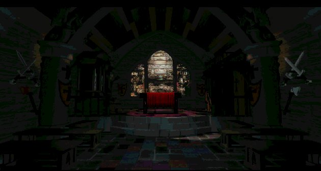

"My god, the pain!"
After Trilobyte went belly up, co-father and lead-programmer Graeme Devine went to Id Software and designed Quake Arena.
This is the new company of co-founder Rob Landeros and David Wheeler. Aftermath.
Robert Stein III designed the 3d for the 11th hour, he has his own company now. Check it out for
some beautiful pictures and avi's.The company of Robert Stein III.
The man, the music. This page was also linked on my seventh guest page. It's the
official page of The Fat Man. (My seventh guest page is linked there!).

This is an adventure game encyclopedia, they were kind enough to add my site to their
links, so I return the favour. If you love adventure games, this really is the place to go to.
This is an excellent fan site I found, I took the liberty to steal some stuff. Take a look, it's great.
This site has a seventh guest page with beautiful sketches of the games characters.
We fans also have an official fanclub, if you want to have your own seventh guest t-shirt? Go see it right now!
Here is another fansite.
And another one.
And yet another.
And you guest it; another.
This site is also linked at this nice fanpages site
Debra Ritz Mason, she played Martine Burden and directed the moviescenes in the seventh guest, has a online presence as well.
Check this page out if you want to learn more about her.
If you want to go to her official site, just follow this link.
Edward Knox (Larry Roher) is online too. Check him out here .
The man behind Stauf, go see this nice page from a seventh guest friend of mine.The official Robert Hirschboeck site.
Here you can find my 11th hour page.
Buy the games online:
The best choice is Amazon, they sell both the games, or there is an auction that sells the game, or they give links to Amazon-linked online shops who do sell the game at that moment.
Another option is Cd Access, at the time that I'm writing this they sell the 11th hour.
Buy the novel online:
There is a novel about the seventh guest. It is written by Matthew J. Costello (the original screenplay-writer) and Craig
Shaw Gardner. I read it and loved it, it really adds more to the game. You can buy this online at multiple sites. Amazon is present again. It costs 21,95 American dollars. Amazon also suggest other online shops, such as Black and Read, this store sells the book for only 11 American dollars. Amazon also links Booksbuyer, this shop sells it at the same price as Amazon.
Buy the strategyguide online:
Amazon is probably your best shot. Just type 'the 7th guest' in the search option on the openingspage and you will find it, if they offer it at that moment.
Buy the soundtrack online:
You guessed it, Amazon sells the cd '7/11' by the Fat Man. But you can also
buy it at his own site, The Fat Man.
Online documentation:
Want to read articles about Trilobyte, Graeme, Rob and David? This is the place to do it.
A long interview with Graeme Devine
A fantastic article about Trilobyte
A sad article about the closing of Trilobyte
I didn't include reviews, because since you checked out this page you're a fan. So, you already know you like the game. If you want to find me on ICQ, this is my number:10948892.